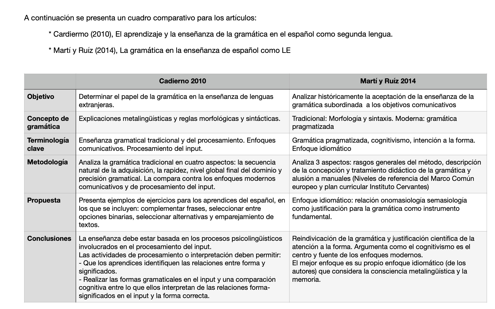

Aspectos gramaticales (módulo 2)
impartido por Dra. Miriam Reyes
← Regresar DELE1. Enseñanza de la gramática en el aula de ELE
Junio 2026
Comparación entre dos enfoques

2. Clase de palabras demostrativos
Junio 2026
infografia